무료와 프리미엄
모든 편집 기능을 무료로 쓸 수 있어요. 무료로 만든 영상에는 작은 워터마크가 들어가요. 광고를 한 번 보고 워터마크 없이 만들거나, 프리미엄(월간·연간 구독, 평생 이용권)으로 워터마크를 없앨 수 있어요.
손쉬운 숏폼 편집
사진과 영상을 한 타임라인에 모으고 자막·음악·내레이션을 더해요. 움직이는 스티커와 필터로 꾸미고, 얼굴 모자이크까지 더해 1080p로 저장해요.
iPhone·iPad 무료 다운로드 · 모든 편집 기능 무료 · 선택형 프리미엄
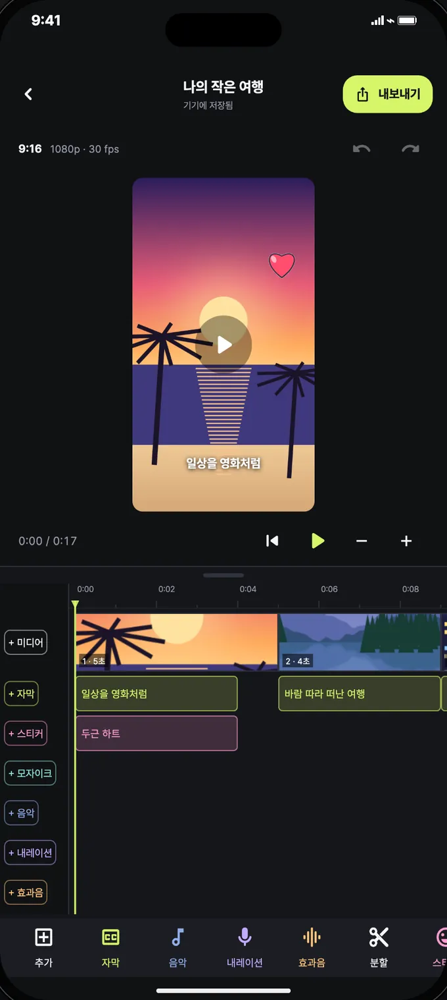
세 단계면 충분해요
휴대폰에 있는 사진과 영상으로 바로 시작해요. 프로젝트는 자동으로 저장되고, 보관함에서 다시 열어 이어서 편집해요.
0:00.0 → 0:04.0
한 타임라인에 넣고 길이를 맞춰요. 자르기·분할·복제·순서 바꾸기와 되돌리기로 다듬고, 클립마다 위치와 크기도 바꿔요.
0:04.0 → 0:09.0
자막과 음악, 직접 녹음한 내레이션과 효과음을 원하는 자리에 놓아요. 스티커와 필터로 분위기도 바꿔요.
0:09.0 → 0:13.0
9:16 세로, 1:1 정사각형, 16:9 가로 중에 고르고 720p 또는 1080p로 갤러리에 저장하거나 공유해요.
+ 자막
문구와 표시 시간, 스타일, 위치, 크기를 하나하나 조절해요. 미리보기에서 자막을 끌어 옮기고 크기도 바꿀 수 있어요.
SRT 자막을 가져오거나 공유하고, 대본으로 자막 초안을 만들 수 있어요. 초안의 시간은 재생하며 직접 맞춰 주세요.
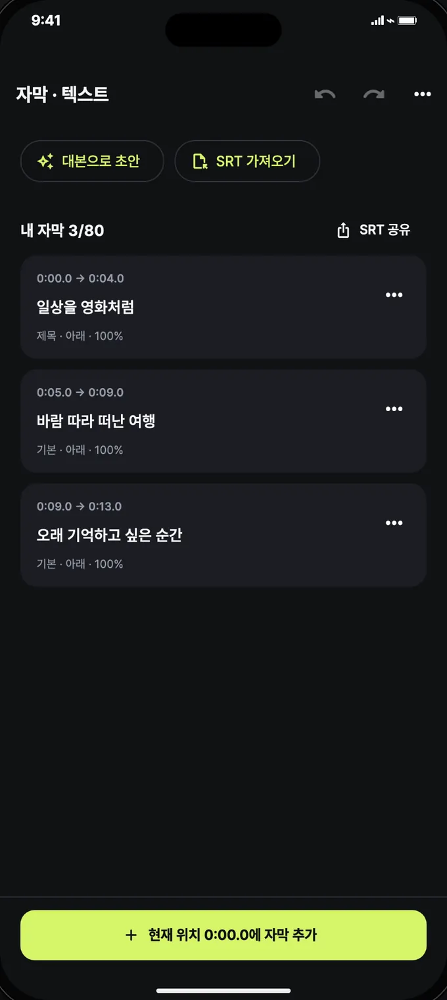
+ 음악+ 내레이션+ 효과음
내장 음악이나 기기의 오디오 파일을 넣고 볼륨을 맞춰요. 내레이션은 앱에서 바로 녹음하거나 기기 음성 합성으로 만들 수 있고, 녹음해 둔 파일을 넣어도 돼요.
대본을 문장으로 나눠 한 문장씩 녹음하거나 기기 음성으로 만들면 같은 시간에 자막도 함께 붙어요. 내레이션이 나오는 구간에는 배경음악 소리를 낮춰 말소리가 잘 들리게 도와줘요.
기기 음성 합성의 언어와 목소리는 설치된 음성에 따라 달라요.
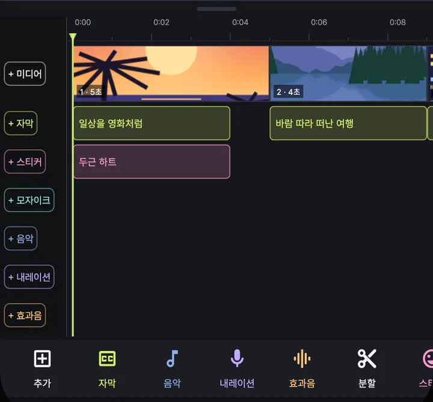
+ 스티커
뚝딱무비가 직접 그린 움직이는 스티커 2,700여 개와 사진을 화면 위에 올려 꾸며요. 겹친 스티커와 사진은 앞뒤 순서를 바꿀 수 있어요.
133가지 필터와 87가지 효과로 장면마다 다른 분위기를 만들어요.
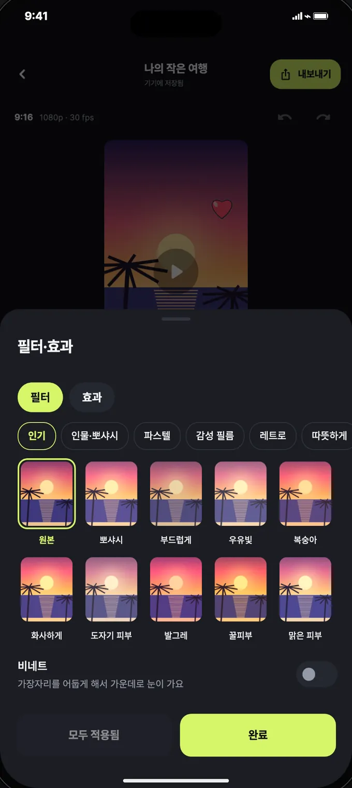
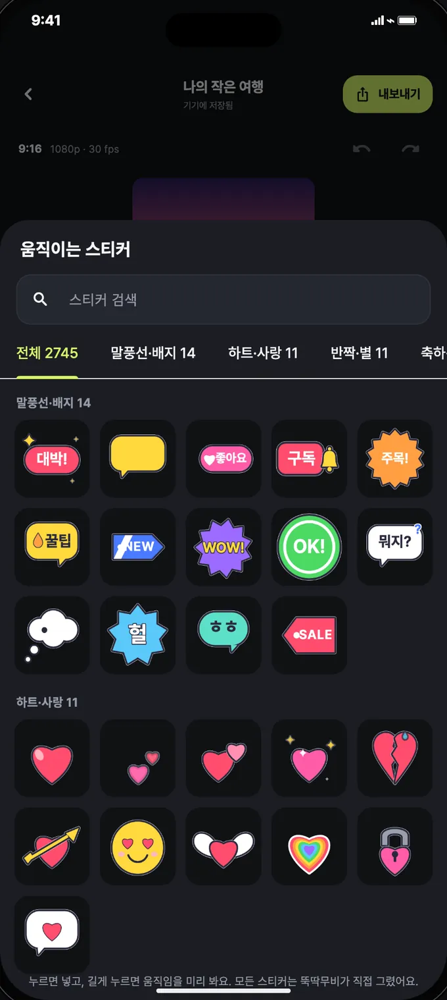
+ 모자이크
영상과 사진에서 얼굴을 찾아, 움직임을 따라가는 모자이크를 씌워요. 가리고 싶은 영역을 직접 놓을 수도 있어요.
얼굴 찾기는 휴대폰 안에서만 처리돼요.
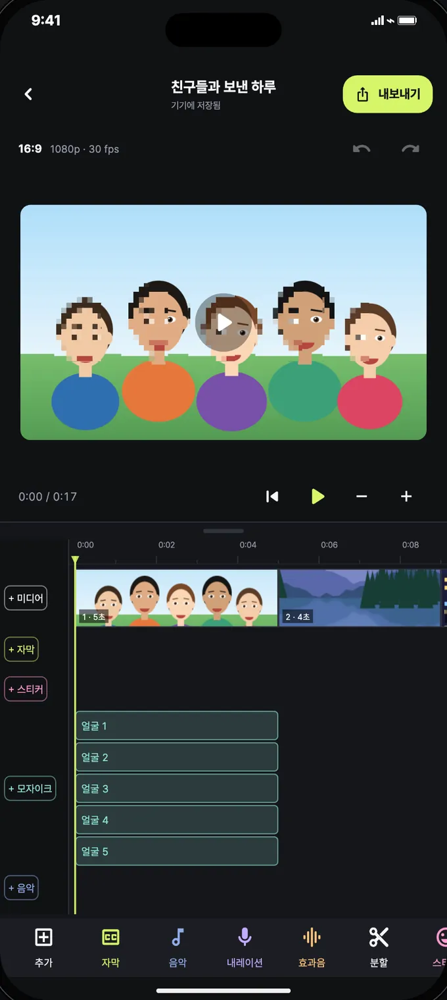
휴대폰에서 컴퓨터로
같은 계정으로 vido.hueeng.com에 로그인하면 컴퓨터 브라우저에서 편집하고 영상을 만들 수 있어요. 휴대폰 프로젝트는 앱의 ‘웹과 주고받기’로 웹에 보내세요.
웹에서 바로 편집하기웹에서 만든 프로젝트와 영상은 그 브라우저에만 저장돼요.
스크린샷
옆으로 넘겨 보세요
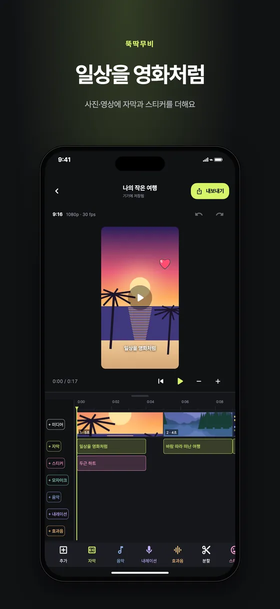
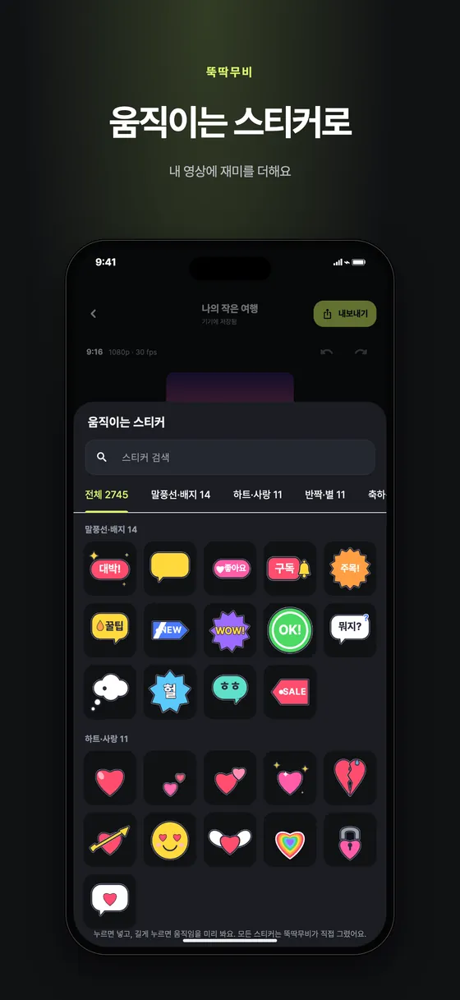
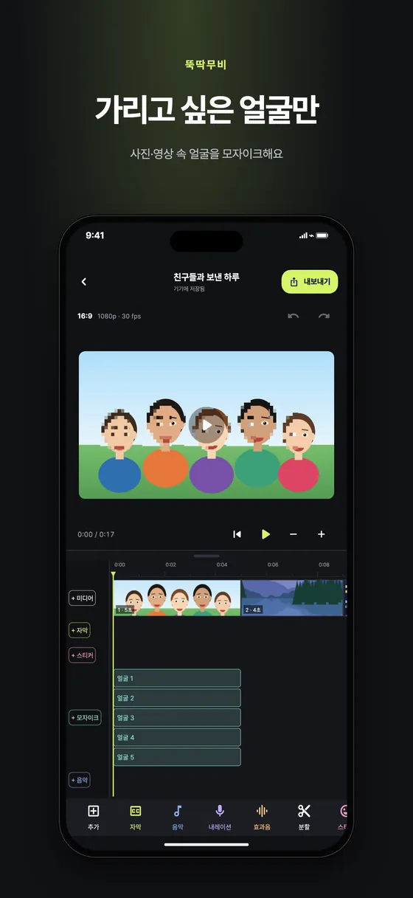
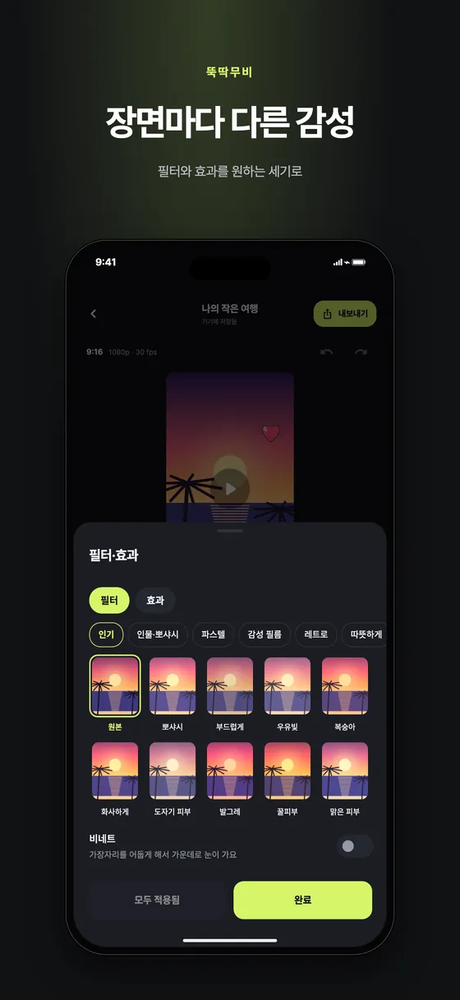
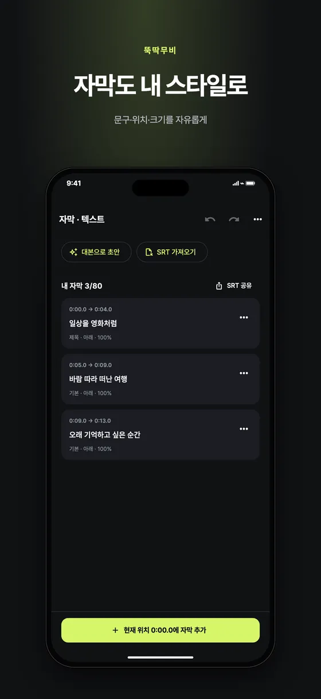
알아 두면 좋아요
모든 편집 기능을 무료로 쓸 수 있어요. 무료로 만든 영상에는 작은 워터마크가 들어가요. 광고를 한 번 보고 워터마크 없이 만들거나, 프리미엄(월간·연간 구독, 평생 이용권)으로 워터마크를 없앨 수 있어요.
편집 프로젝트와 미디어는 휴대폰에 저장되고 서버에 자동으로 올리지 않아요. 내보낸 영상은 앱 안 보관함에 남아 갤러리에 다시 저장하거나 공유할 수 있어요.
iPhone·iPad 앱과 컴퓨터 브라우저(vido.hueeng.com)에서 쓸 수 있어요. Android 버전은 출시 예정이에요. 한국어·영어·일본어·중국어(간체·번체)·스페인어·프랑스어·독일어·포르투갈어를 지원해요.
지금 시작해요
지금 받을 수 있어요
App Store에서 뚝딱무비를 받아 보세요. 이메일, 카카오, Google, Apple 계정으로 로그인해 시작해요.
App Store에서 받기무료 다운로드 · 앱 내 구매 포함
출시 예정
Google Play 버전은 출시 예정이에요. 그동안은 컴퓨터 브라우저에서 웹 편집기로 만들 수 있어요.
Google Play 출시 예정지금은 iPhone·iPad와 웹에서 만나요
지금 쓸 수 있어요
vido.hueeng.com에 로그인하면 브라우저에서 바로 편집해요. 휴대폰 프로젝트도 받아 이어서 만들 수 있어요.
웹에서 바로 편집하기앱과 같은 계정으로 로그인해요
도움말
모든 편집 기능을 무료로 쓸 수 있어요. 무료로 만든 영상에는 작은 워터마크가 들어가며, 광고를 한 번 보고 워터마크 없이 만들거나 프리미엄(월간·연간 구독, 평생 이용권)으로 워터마크를 없앨 수 있어요.
네. 이메일, 카카오, Google, Apple 계정으로 로그인한 뒤 이용할 수 있어요. 같은 계정으로 vido.hueeng.com에 로그인하면 컴퓨터에서도 이어서 편집할 수 있어요.
아니요. 자막 초안은 음성 자동 받아쓰기가 아니에요. 대본으로 초안을 만든 뒤 재생하며 시간을 맞춰 주세요. 대본을 문장으로 나눠 한 문장씩 녹음하거나 기기 음성으로 만들면 같은 시간에 자막도 함께 붙어요.
편집 프로젝트와 미디어는 휴대폰에 저장되며 서버에 자동으로 올리지 않아요. 얼굴 찾기도 휴대폰 안에서만 처리돼요. ‘웹과 주고받기’로 보낸 프로젝트는 1시간 동안만 서버에 맡겨지고, 웹에서 받으면 바로 지워져요.
9:16 세로, 1:1 정사각형, 16:9 가로 화면을 고를 수 있고, 720p 또는 1080p로 내보내 갤러리에 저장하거나 공유해요. 내보낸 영상은 앱 안 보관함에도 남아요.
Google Play 버전은 출시 예정이에요. 지금은 iPhone·iPad 앱과 컴퓨터 브라우저(vido.hueeng.com)에서 쓸 수 있어요.
다른 궁금한 점은 hi@hueeng.com으로 보내 주세요.